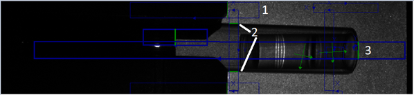
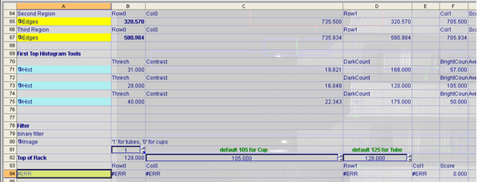
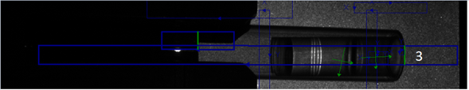

Troubleshooting Sample Presentation Unit (SPU) Camera Calibrations
This topic includes information about how to troubleshooting issues with calibrating the sample presentation unit (SPU) camera.
| Table of Contents |
|---|
| Calibrating the sample presentation unit (SPU) camera |
| Troubleshooting When the Calibration Fails or Stalls |
| Troubleshooting When the Calibration Fails in Position 5 |
Calibrating the sample presentation unit (SPU) camera
Follow the steps below to open the In-Sight Explorer application. Additionally, the application can be set to record images for further analysis later (i.e. submitting to support for issue investigation).
Warning: Do not press the
Delete key while adjusting cell values within In-Sight Explorer as this may delete the background algorithm and render the camera inoperable.
Caution: Initializing the system will reset any values adjusted in In-Sight Explorer. If values are adjusted following the Sample Handler Camera diagnostic routine, ensure a camera calibration is performed
prior to initializing, or the adjusted values will reset to the default and may lead to further calibration/diagnostic failures.
Caution: Do not adjust any cells within the In-Sight Explorer program unless explicitly directed by this procedure or with help from support team(s).
- Press the Windows key and go to to open the In-Sight Explorer application.
- Note the value of Cell D81.
- Open the Machine Control App and the Console App.
- Select the SYSTEM RUNNING button and go to to enter the instrument into a YELLOW (Paused) status.
- In the Console App go to and select Start Session.
- Update the SPU Camera Jobfile through In-Sight Explorer.
- In In-Sight Explorer, in the In-Sight Network pane, expand In-Sight Sensors.
- Select the camera that ends with SPU.
- Go to .
- The question Are you sure you want to go offline? will be displayed. Select Yes.
- Go to .
- Select In-Sight Sensors in the left panel of the popup.
- Select the camera that ends with SPU.
- Select SPUBarcodeAndVision.job.
- Go to .
- Select cell I2. Set the value of I2 to 0.750.
- Select cell I33. Set the value of I33 to 8.000.
- Select cell L32. Set the value of L32 to 5.0.
- Go to .
- Go to .
- The question Are you sure you want to go online? will be displayed. Select Yes.
- Do not close In-Sight Explorer. You must first perform SPU Calibrations.
- In the Console App go to
.
- Select SPU.
- Select Start Camera Calibration. Follow the on-screen directions to calibrate the camera. If the calibration fails, see C38843 DxI 9000 Process Monitoring Work Instructions for more information.
- After the calibration has completed and passed, close In-Sight Explorer.
Troubleshooting When the Calibration Fails or Stalls
If the sample presentation unit (SPU) camera calibration fails or stalls, you can restart the calibration procedure and load the cup and tube racks separately to give the system more time to interact with the cup rack cell settings, so that the tube rack does not load and interrupt the calibration process.
- Cancel the calibration.
- Load only the rack with 2ml cups.
- Restart the calibration.
- After the system has calibrated the cup rack, load the 13x100mm glass tubes (orderable part number D01860) into the rack.
- Complete the calibration.
Troubleshooting When the Calibration Fails in Position 5
- Run the SPU camera calibration but save calibration images to the instrument desktop.
- Confirm with the SPU camera calibration UI which position is failing (e.g. position 5 is unknown for the tube racks).
- In In-Sight Explorer set the camera offline.
- If the position 5 failure is occurring for a cup rack, set cell B81 to 0.
- If the position 5 failure is occurring for a tube rack, set cell B81 to 1.
- During imaging, images are taken of the beginning of the sample container rack, the middle of the sample container rack, and the end of the sample container rack.
Note: For troubleshooting, only consider the dark images of the beginning, middle, and end of the rack.
- In In-Sight Explorer go to
and select the beginning dark image for the rack with the position 5 failure.
Note: You can also drag and drop this image into the jobfile.
- With the image loaded, set the value of
cell D0 to
1.
Note: This "sets" the pattern matching which finds the front of the sample container rack.
- Set the value of
cell D0 to
2.
Note:
- This "locks in" the pattern matching for this specific rack.
- This manual "set" and "lock in" process must be done for the beginning of each rack analyzed during offline analysis. This process is not necessary for the middle and end images of the sample rack.
- Go to
and select the end dark image for the rack with the position 5 failure.
Note:
- You can also drag and drop this image into the jobfile.
- This is the image with Position 5 present.
- Toggle the spreadsheet view to look at the image and confirm that the following 3 features are present or absent:

- 1) The top Region of Interest and the detection of the top of the rack (green line).
- 2) The width lines for the sample container.
- Note that for cups, the width lines may not be present or may be present in the wrong location. This is acceptable for cups only and does not impact detection.
- 3) The height line for the sample container.
- Toggle the spreadsheet view again and confirm if
cell A84 contains the value
#ERR.

Note: Missing features and a cell A84 with a value of #ERR is indicative of a position 5 failure.
Note: Features 1 and 2 (green detection lines) are missing in the image above, and cell A84 has a value of #ERR. - Lower cell D82 (if failure occurs on a tube rack) or cell C82 (if failure occurs on a cup rack) until cell A84 does not have a #ERR value and all three features can be seen when toggling the spreadsheet view.
- Save the jobfile.
- Set the camera back online.
- Repeat calibration.